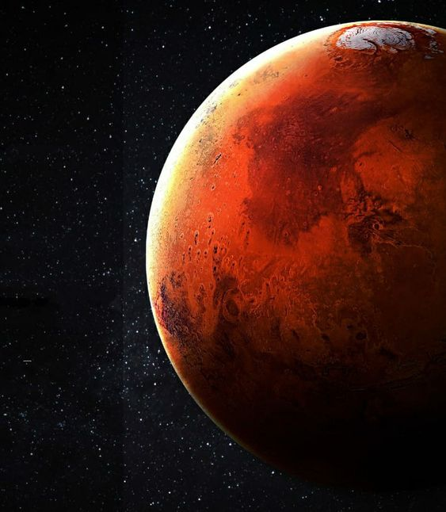

Mars: The Red Planet
Mars is the fourth planet from the Sun and is often referred to as the "Red Planet" due to its reddish appearance caused by iron oxide on its surface. It's a terrestrial planet, similar to Earth, but smaller and with a thinner atmosphere.
Mars has two small moons, Phobos and Deimos. Its polar ice caps are made of water ice and carbon dioxide ice. The planet's surface features vast plains, volcanoes, and canyons, including the largest canyon in the solar system, Valles Marineris.
Mars is a popular target for space exploration, with several missions having been sent to study its surface and search for signs of past or present life. The planet's potential for habitability has made it a focus of scientific research.
Mars is the fourth planet from the Sun. The surface of Mars is orange-red because it is covered in iron(III) oxide dust, giving it the nickname "the Red Planet".[22][23] Mars is among the brightest objects in Earth's sky, and its high-contrast albedo features have made it a common subject for telescope viewing. It is classified as a terrestrial planet and is the second smallest of the Solar System's planets with a diameter of 6,779 km (4,212 mi). In terms of orbital motion, a Martian solar day (sol) is equal to 24.5 hours, and a Martian solar year is equal to 1.88 Earth years (687 Earth days). Mars has two natural satellites that are small and irregular in shape: Phobos and Deimos.
The relatively flat plains in northern parts of Mars strongly contrast with the cratered terrain in southern highlands – this terrain observation is known as the Martian dichotomy. Mars hosts many enormous extinct volcanoes (the tallest is Olympus Mons, 21.9 km or 13.6 mi tall) and one of the largest canyons in the Solar System (Valles Marineris, 4,000 km or 2,500 mi long). Geologically, the planet is fairly active with marsquakes trembling underneath the ground, dust devils sweeping across the landscape, and cirrus clouds. Carbon dioxide is substantially present in Mars's polar ice caps and thin atmosphere. During a year, there are large surface temperature swings on the surface between −78.5 °C (−109.3 °F) to 5.7 °C (42.3 °F)[c] similar to Earth's seasons, as both planets have significant axial tilt.

Mars was formed approximately 4.5 billion years ago. During the Noachian period (4.5 to 3.5 billion years ago), Mars's surface was marked by meteor impacts, valley formation, erosion, and the possible presence of water oceans. The Hesperian period (3.5 to 3.3–2.9 billion years ago) was dominated by widespread volcanic activity and flooding that carved immense outflow channels. The Amazonian period, which continues to the present, has been marked by the wind as a dominant influence on geological processes. Due to Mars's geological history, the possibility of past or present life on Mars remains of great scientific interest.
Since the late 20th century, Mars has been explored by uncrewed spacecraft and rovers, with the first flyby by the Mariner 4 probe in 1965, the first orbit by the Mars 2 probe in 1971, and the first landing by the Viking 1 probe in 1976. As of 2023, there are at least 11 active probes orbiting Mars or on the Martian surface. Mars is an attractive target for future human exploration missions, though in the 2020s no such mission is planned.
Main article: Geological history of Mars
Scientists have theorized that during the Solar System's formation, Mars was created as the result of a random process of run-away accretion of material from the protoplanetary disk that orbited the Sun. Mars has many distinctive chemical features caused by its position in the Solar System. Elements with comparatively low boiling points, such as chlorine, phosphorus, and sulfur, are much more common on Mars than on Earth; these elements were probably pushed outward by the young Sun's energetic solar wind.[24]
After the formation of the planets, the inner Solar System may have been subjected to the so-called Late Heavy Bombardment. About 60% of the surface of Mars shows a record of impacts from that era,[25][26][27] whereas much of the remaining surface is probably underlain by immense impact basins caused by those events. However, more recent modeling has disputed the existence of the Late Heavy Bombardment.[28] There is evidence of an enormous impact basin in the Northern Hemisphere of Mars, spanning 10,600 by 8,500 kilometres (6,600 by 5,300 mi), or roughly four times the size of the Moon's South Pole–Aitken basin, which would be the largest impact basin yet discovered if confirmed.[29] It has been hypothesized that the basin was formed when Mars was struck by a Pluto-sized body about four billion years ago. The event, thought to be the cause of the Martian hemispheric dichotomy, created the smooth Borealis basin that covers 40% of the planet.[30][31]
A 2023 study shows evidence, based on the orbital inclination of Deimos (a small moon of Mars), that Mars may once have had a ring system 3.5 billion years to 4 billion years ago.[32] This ring system may have been formed from a moon, 20 times more massive than Phobos, orbiting Mars billions of years ago; and Phobos would be a remnant of that ring.[33][34]
The geological history of Mars can be split into many periods, but the following are the three primary periods:[35][36]
Noachian period: Formation of the oldest extant surfaces of Mars, 4.5 to 3.5 billion years ago. Noachian age surfaces are scarred by many large impact craters. The Tharsis bulge, a volcanic upland, is thought to have formed during this period, with extensive flooding by liquid water late in the period. Named after Noachis Terra.[37]
Hesperian period: 3.5 to between 3.3 and 2.9 billion years ago. The Hesperian period is marked by the formation of extensive lava plains. Named after Hesperia Planum.[37]
Amazonian period: between 3.3 and 2.9 billion years ago to the present. Amazonian regions have few meteorite impact craters but are otherwise quite varied. Olympus Mons formed during this period, with lava flows elsewhere on Mars. Named after Amazonis Planitia.[37]
Geological activity is still taking place on Mars. The Athabasca Valles is home to sheet-like lava flows created about 200 million years ago. Water flows in the grabens called the Cerberus Fossae occurred less than 20 million years ago, indicating equally recent volcanic intrusions.[38] The Mars Reconnaissance Orbiter has captured images of avalanches.[39][40]